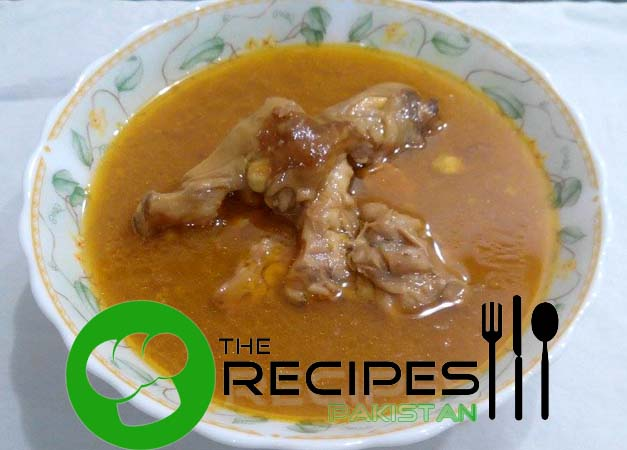

Recipe of Paya
Ingrediants
- Paye (goat trotters)
- 4 Ghee 1 cup
- Onion 3 large (sliced)
- Ginger garlic paste 4 tea spoons
- Salt to taste
- Red chili powder 2 tea spoons
- Turmeric powder 1 tea spoon
- Turmeric powder 1 tea spoon
- Water as required
Instructions
- Take a clay pot or wide cooking pan, heat ghee and golden brown onion in it.
- Add salt, red chili powder, turmeric powder and stir. Put mixture into blander and blend the mixture.
- Now put ground masala again in pot, pour enough water which leave sufficient gravy after tendering trotters.
- Add trotters, cover and cook over high flame for 2-3 minutes then low the flame. Cook 4-6 hours or until trotters tender and desired gravy left.
- Mix garam masala powder in ¼ cup water and pour into gravy. Mix gently.
